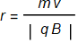
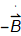
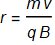
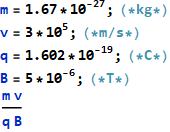
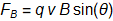
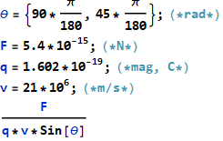
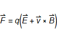
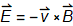
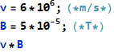

Exam Like Questions: Module 5
Lecture 11
T/F
1) A protons cyclotron radius is smaller than an electrons if both have the same speed perpendicular to the same magnetic field.
Answer: False
Recall:  thus r∝m
2) A stationary proton suddenly experiences an increasing magnetic field that causes it to move.
Answer: True
Look at Maxwell’s Equation ×= 
Multiple Choice
1) An electron moves from the bottom of the page to the top of the page, a magnetic field points into the page. The magnetic force on the electron is in the following direction: a) left, b) into the page, c) right, or d) out of the page?
Answer: C
Use RHR
2) The cyclotron radius of a proton moving at 3.0 x m/s perpendicular to a 5 x T magnetic field is a) 0.627 m, b) 0.342 m, c) 1.25 m, or d) 627m.
Answer: D


Useful Exercises
1) Find a) the minimum magnetic field needed to exert a 5.4 fN force on an electron moving at 21 Mm/s and b) the field strength required if the field magnetic field were at to the electrons velocity.
Answer: a) 0.00161 T b) 0.00227 T


2) Find a) the electric field magnitude needed to reduce to zero the electromagnetic force on an electron moving perpendicular to a 5.0 x T magnetic field at 6.00 x  m/s and b) if the magnetic field is parallel to the z axis and the electron velocity is parallel to the x axis what is the direction of the required electric field.
m/s and b) if the magnetic field is parallel to the z axis and the electron velocity is parallel to the x axis what is the direction of the required electric field.
Answer: a) 300 b) Parallel to the y-axis (if there is a non zero force, sign of charge will matter)

for F=0 then 
and RHR for direction
